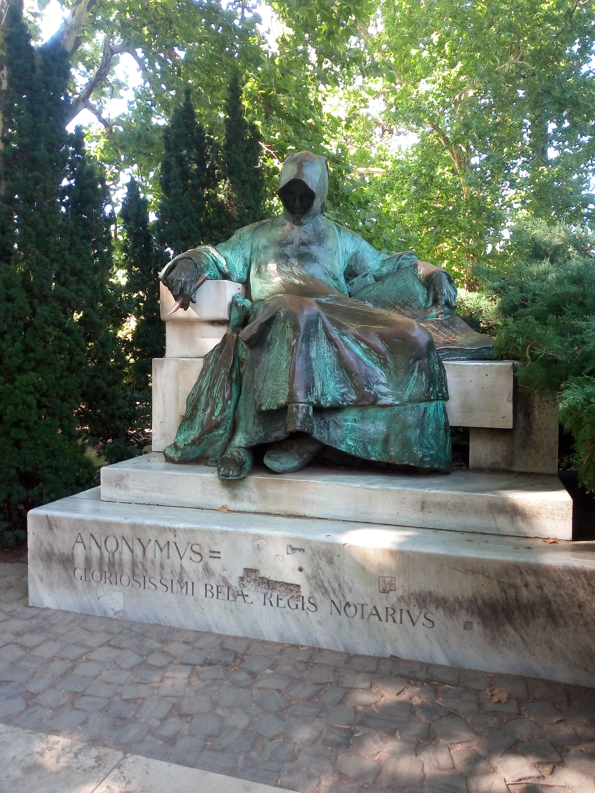

City Park
Budapest · Hungary
City Park (Városliget) is one of Budapest's most inviting green spaces, offering a welcome contrast to the busy streets of the capital. Its tree-lined paths, open lawns, and peaceful lake create a setting where nature and city life come together. The park is also home to notable landmarks and cultural attractions, making it more than just a place to relax. Walking through its grounds offers a different perspective on Budapest and a chance to enjoy the city's quieter side. These photographs capture moments and details from my visit to this distinctive urban park.
My Photo Gallery
Explore my personal photographs and memories from City Park, Budapest.
View All Photos ↗